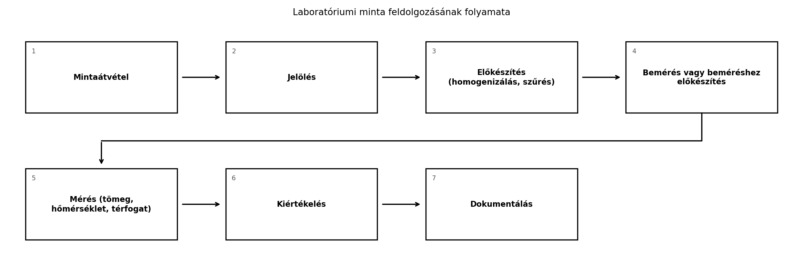

A pékség laboratóriumában hajnali műszak után lisztmintát veszünk, vagy éppen sóoldat-titrálást készítünk elő. Ha a munkarendet nem tartjuk be, a vizsgálati eredmény hibás lesz, és baleset is könnyen történhet: egy címkézetlen főzőpohárban savmaradék marad, valaki szájjal pipettáz, vagy forró tégelyt vesz ki kézzel. Ezt az alfejezetet azzal a céllal dolgozzuk fel, hogy a tanuló biztonságosan, pontosan és dokumentáltan tudjon laboratóriumi feladatot végezni.
Az alábbi folyamatábra a laboratóriumi minta útját mutatja a mintavételtől a dokumentálásig. Az egyes lépésekben a munkarend szabályai döntik el, hogy az eredmény megbízható és a munka biztonságos lesz-e.

Definíció. A laboratóriumi munkarend azoknak a magatartási, higiéniai, dokumentálási és eszközkezelési szabályoknak az összessége, amelyek a balesetmentes és megbízható vizsgálati munkát biztosítják.
Szabály. Laboratóriumban csak az arra kijelölt, beosztott személy tartózkodhat, és csak a kiadott feladatot végezheti. A vizsgálathoz használt edények, vegyszerek és műszerek a laboratóriumi munkahely részei, nem vihetők a pékség termelőterületére, és onnan élelmiszer nem hozható be a laborba.
A laboratóriumi munkarend legfontosabb elemei:
Higiénia. Bár a sütőipari vizsgálólaboratóriumban a minta általában nem fogyasztható, a laboratóriumi higiénia mégis közvetlenül kihat a termékbiztonságra: a tisztátalan eszköz, a szennyezett mérőedény vagy a nem megfelelően kezelt minta hamis eredményt adhat, és akár a termelésben is rossz döntést okozhat. A laboratóriumi kézmosás, a tiszta edények és a minta szennyeződésének megelőzése a vizsgálati munka alapja.
Előírás. A laboratóriumi tevékenységre is vonatkozik a munkavédelemről szóló törvény és a vegyi anyagok biztonsági adatlapjaiból következő utasítás (ellenőrizendő: a munkavédelemről szóló 1993. évi XCIII. törvény hatályos szövege és a munkahelyi kémiai biztonságra vonatkozó rendelet). Minden vegyszerről biztonsági adatlapnak kell rendelkezésre állnia, és az abban foglaltakat a tanuló nem írhatja felül.
A laboratóriumi balesetek leggyakoribb forrásai:
Figyelem. A laboratóriumban bekövetkező bármilyen balesetet azonnal jelenteni kell az oktatónak vagy a munkavezetőnek, és a munkahelyi elsősegélynyújtási utasítás szerint kell eljárni.
Tilos.
Gépbiztonság. A szárítószekrényt, az izzítókemencét és a mérleget csak leállított, áramtalanított, újraindítás ellen biztosított állapotban szabad tisztítani, beállítani vagy javítani. A hőmérséklet-szabályozó beállításai a gyártói utasítás szerint módosíthatók. A fűtőberendezésből kivett forró tárgyat (a tégelyt tégelyfogóval, hőálló kesztyűben) előbb hőálló alátétre, rövid hűlés után exszikkátorba kell helyezni, nem éghető felületre.
Az alábbi táblázat a leggyakrabban használt laboratóriumi eszközöket foglalja össze. Az eszközöket rendeltetésszerűen használjuk, és mindegyiknél figyelünk a használati korlátra.
| Eszköz | Rendeltetés | Mire ügyelj |
|---|---|---|
| Főzőpohár | Anyagok keverése, melegítése, ideiglenes tárolása | Pontos térfogatmérésre nem alkalmas; hőálló vagy hőre érzékeny változatát a feladat szerint válaszd |
| Mérőhenger | Folyadéktérfogat közelítő kimérése | Pontos mérésre a mérőlombik vagy pipetta alkalmas; a leolvasást szemmagasságban, a folyadékfelszín alsó pontján végezd |
| Pipetta | Kis, pontos folyadéktérfogatok kimérése, oldatminták átvitele | Csak pipettalabdával használd; a pipetta hegyét ne érintsd az edény falához úgy, hogy a minta szennyeződjön |
| Büretta | Pontos, változtatható térfogatú oldatadagolás, például titráláshoz | Csak függőlegesen rögzítve működik; a csapot óvatosan, cseppenként szabályozd |
| Mérőlombik | Adott térfogatú oldat pontos elkészítése | A jelig töltésnél a folyadékfelszín alsó pontja a jel, a folyadékot szobahőmérsékleten töltsd a jelre |
| Erlenmeyer-lombik | Titrálások, keverés, melegítés, rázás | Keskeny száján át a folyadék jól keverhető; a rázás közben a tartalma ne csapódjon ki |
| Szárítószekrény | Nedvességtartalom meghatározásához, anyagok szárításához | A beállított hőmérséklet és idő tanulási példa, ellenőrizendő a vizsgálati szabvány és a gyártói adatlap |
| Exszikkátor | Szárított vagy izzított anyagok lehűtése, nedvességtől védett tárolása | A csiszolt zárófelületet vékonyan zsírozd be (vazelin vagy szilikonzsír), és tartsd tisztán; a forró tégelyt ne helyezd hideg exszikkátorba hirtelen |
| Izzítókemence | Hamutartalom, szervesanyag-maradék vizsgálata | Csak hőálló eszközöket tegyél bele; a tégelyt tégelyfogóval, hőálló kesztyűben vedd ki, rövid hűlés után tedd exszikkátorba |
| Mérleg | Tömeg pontos meghatározása | Használat előtt ellenőrizd a vízszintet, a nulla pontot és a tisztaságot; a részletes kezelést lásd a következő alfejezetben |
A táblázat eszközeit és néhány további, gyakran használt eszközt (porcelán tégely, tölcsér, dörzsmozsár) az alábbi tabló rajzon mutatja: a felső sorban az üveg- és porceláneszközök (1–6), az alsó sorban a készülékek és kiegészítők (7–12) láthatók.
A felismerésnél figyeld a jellegzetes részleteket: a mérőhenger (3) skálás és talpas, a főzőpohár (1) skálája csak tájékoztató; a hasas pipettán (4) egyetlen jel van, az osztotton skála; a pipettát mindig labdával töltjük, szájjal pipettázni tilos. A HTML-kiadásban az eszközre mutatva megjelenik a rendeltetése és a használati korlátja.
Szabály. A mérleg az a mérőeszköz, amelyet a pékség laboratóriumában szinte minden vizsgálathoz használunk. A pontos mérés feltételeit, a kalibrálást és a különböző mérlegtípusok kezelését a Tömegmérés, mérlegek és hőmérsékletmérés alfejezetben dolgozzuk fel.
A vizsgálat akkor lesz megbízható, ha a minta reprezentatív, tehát az egész tételt jól képviseli, és ha a minta azonosítása egyértelmű.
A minta előkészítésének lépései.
Szabály. A minta címkéjének legalább a következőket kell tartalmaznia:
A címke nélküli edény tartalmát ismeretlen anyagként kell kezelni, és a laboratóriumi hulladékkezelési utasítás szerint kell ártalmatlanítani, nem szabad felhasználni.
Előírás. A minta nyomonkövethetőségét a laboratóriumi dokumentációval együtt kell megőrizni. A nyomonkövethetőség követelménye a HACCP-szemlélet része: ha egy vizsgálati eredmény alapján a tételt utólag meg kell ítélni, a minta azonosítója és a mérési adatsor nélkül ez lehetetlen (ellenőrizendő: a pékség HACCP-terve és a laboratóriumi mintakezelési utasítás).
Példa. Lisztminta előkészítése nedvességtartalom-méréshez.
Adott egy 250 g-os, zsákból vett BL 55 lisztminta. A tanuló a munkakezdési ellenőrzőlista szerint előkészíti a szárítóedényt, a mérleget és az exszikkátort. A lisztmintát óvatosan keveri, majd a szárítóedénybe bemér 5,000 g mintát. Az edényt feliratozza: „BL 55 liszt, 3. zsák, nedvesség, 2025. 03. 04., K. J.” A bemért mintát beteszi a szabványban előírt hőmérsékletre (gabonaőrleményeknél a referencia-módszerek jellemzően 130 °C körüli hőmérsékletet és kb. 90 perc–2 óra szárítást írnak elő) előmelegített szárítószekrénybe (ellenőrizendő: MSZ EN ISO 712 hatályos változata, a pékség labor-utasítása). A mérési jegyzőkönyvben rögzíti a bemérési tömeget és a kezdési időpontot.
Példa. Helytelen eljárás: címkézetlen edény.
Egy pohárban enyhén sós, zavaros folyadék marad az előző vizsgálatból. A tanuló nem tudja, mi az, ezért a mosogatóba önti, elmossa, és új mintát akar bele tenni. Helyes megoldás: a címkézetlen edény tartalmát ismeretlen anyagként kell kezelni, a hulladékkezelési szabály szerinti edénybe önteni, majd az edényt alaposan elmosni, desztillált vízzel öblíteni, és csak utána használni új mintához. A hibás eljárás azért veszélyes, mert a kiöntött anyag sav vagy lúg is lehetett volna, és a maradék szennyezheti az új vizsgálatot.
Egy pék tanuló a vizsgafelkészülés során hamutartalom-meghatározást végzett. A feladat előtt megmosott egy tégelyt, és nem szárította ki, így vízcsepp maradt benne, és a bemérésbe került. A minta tömege így nagyobb lett, a számított hamutartalom pedig hamis, alacsony értéket mutatott. A tanuló a hibáját csak akkor vette észre, amikor a labornaplót összevetette egy másik tanuló eredményével.
A tanulság: a laboratóriumi munkarendben a tisztaság, a száraz eszköz és a pontos bemérés nem formaság. A vizes edényben lévő maradék víz megváltoztatja a minta tömegét, és ezzel a teljes vizsgálati eredményt. A helyes megoldás az, hogy a bemérés előtt az edényt megfelelően szárítjuk, és ellenőrizzük a mérleg nulla pontját.
Cél. A tanuló a sütőipari laboratóriumban biztonságosan előkészít egy liszt- és egy oldatmintát, és azokat megfelelően megjelöli.
Eszközök és anyagok. Főzőpohár, mérőhenger, pipetta, mérőlombik, szárítóedény, exszikkátor, mérleg, védőköpeny, védőszemüveg, vegyszerálló kesztyű, labornapló, címkék, lisztminta, sóoldat vagy más vizsgálati oldat.
Higiénia. A munka megkezdése előtt tiszta védőköpenyt veszünk fel, a hosszú hajat összefogjuk, ékszert nem viselünk. A kézmosás után a munkafelületet letöröljük. A laborba ételt, italt nem viszünk be.
Gépbiztonság. Ha szárítószekrényt, izzítókemencét vagy mérleget használunk, előtte ellenőrizzük, hogy a készülék érintetlen, a védőburkolat a helyén van, és a hálózati csatlakozó kifogástalan. A forró eszközt csak hőálló kesztyűvel fogjuk meg. A mérleg használata előtt ellenőrizzük a vízszintet és a tisztaságot.
Ellenőrzőlista – laboratóriumi munkakezdés és minta-előkészítés.
Dokumentálás. A labornaplóban rögzítjük a minta azonosítóját, a vizsgálat nevét, a bemért mennyiséget, a használt eszközöket, a mérési időpontot és az eredményt. A javítást áthúzással, keltezéssel, aláírással végezzük, nem radírozással.
A laboratóriumi munka minőségét a következő szempontokkal ellenőrizzük:
Ha a fenti pontok bármelyike nem teljesül, a vizsgálati eredményt nem szabad megbízhatónak tekinteni, és a munkát meg kell ismételni.
1. Hiba. A tanuló címke nélkül hagy egy főzőpohárban lévő oldatot.
2. Hiba. A tanuló szájjal pipettázik, mert így látja gyorsabbnak.
3. Hiba. A szárítószekrényből puszta kézzel veszi ki a tálat.
4. Hiba. A mintát nem homogenizálják, csak a zacskó tetejéről vesznek ki egy kanállal.
1. feladat (A). Sorold fel a főzőpohár, a mérőhenger, a mérőlombik és a büretta rendeltetését, és nevezd meg, melyik alkalmas pontos térfogatmérésre.
2. feladat (A). Írd le három lépésben, mit kell tenni, ha egy üvegpohár eltörik a laboratóriumi munka során.
3. feladat (B). Egy tanuló 250 ml vizet akar kimérni. Mérőhengert, főzőpoharat vagy mérőlombikot válasszon? Indokold a döntést, és írd le a helyes leolvasás módját.
4. feladat (B). Ismertesd az elsősegély lépéseit forró tárgy okozta égés esetén. Melyik beavatkozás tilos?
5. feladat (C). Elemezd a következő hibás gyakorlatot: a tanuló a savas oldatot szájjal pipettázza át egy másik edénybe, majd a kiürült pipettát csapvízzel leöblíti, és a következő vizsgálathoz használja. Mi a veszély, milyen hibákat követ el, és mi a helyes eljárás?
6. feladat (D). Készíts 8 lépéses laboratóriumi munkakezdési és minta-előkészítési ellenőrzőlistát egy lisztminta nedvességtartalom-vizsgálatához. Az egyes lépéseknél add meg, milyen eszközt vagy dokumentumot használsz. Melyik lépés kapcsolódik a következő, Tömegmérés, mérlegek és hőmérsékletmérés alfejezetben tanultakhoz?
1. feladat (A).
Pontos térfogatmérésre a mérőlombik és a büretta, valamint a pipetta való; a mérőhenger csak közelítő.
2. feladat (A).
3. feladat (B).
A tanuló 250 ml víz gyors kiméréséhez mérőhengert válasszon. A mérőlombik pontos, de csak a meghatározott térfogatú oldat elkészítésére való; a főzőpohár nem mérésre szolgál. A mérőhengert vízszintes felületen tartva, a folyadékfelszín alsó pontját szemmagasságban olvassa le.
4. feladat (B).
Lépések:
Tilos az égési sérült bőrt olajjal, liszttel, krémmel bevonni, és a ruhát az égett bőrről letépni, ha az odatapadt.
5. feladat (C).
A tanuló két súlyos hibát követ el.
Helyes eljárás: pipettalabdával dolgozunk, a pipettát a használat után az előírás szerint elmossuk, desztillált vízzel öblítjük, és szárítva tesszük el. A savas oldatot a biztonsági adatlap szerint, védőszemüveg és vegyszerálló kesztyű használatával kezeljük.
6. feladat (D).
Ellenőrzőlista liszt nedvességtartalom-vizsgálatához:
A mérleg használata (nulla pont, vízszint, bemérés pontossága) kapcsolódik a Tömegmérés, mérlegek és hőmérsékletmérés alfejezetben tanultakhoz.
A laboratóriumi munkarend a rend, a tisztaság, a feliratozás és a dokumentálás szabályainak összessége. Biztosítja, hogy a vizsgálat pontos és visszakövethető legyen, és hogy a munka közben senki ne sérüljön meg. A laboratóriumban a baleseti források között az üveg, a hő, a savak és lúgok, a gázégő, az izzítókemence és a hibás elektromos eszközök szerepelnek; mindegyiknél ismerni kell a megelőzést és az elsősegélyt. Az alapvető eszközök – főzőpohár, mérőhenger, pipetta, büretta, mérőlombik, Erlenmeyer-lombik, szárítószekrény, exszikkátor, izzítókemence, mérleg – mindegyikének meghatározott rendeltetése és használati korlátja van. A minta előkészítése és jelölése nélkül a mérési eredmény nem megbízható. A mérleg használata a Tömegmérés, mérlegek és hőmérsékletmérés alfejezetben folytatódik.